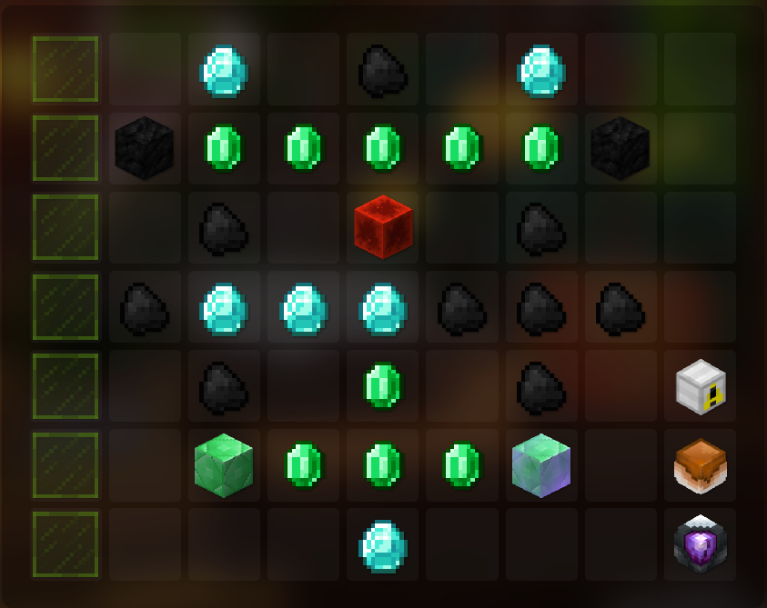

Copy coords from the text file below > in game type /skytils > share > import from clipboard
Magma Fields Mithril is only doable by maxed out players (divans drill) and you cant level a pet doing it. Non-Magma Fields Mithril is alot
easier to do and while it gives a bit less mining xp you can level up a pet.
Magma fields coordsThis is the optimal set-up for all types of mithril mining, if u are going Non-Magma Fields Mithril you dont have to take mining speed boost and can get powder buff
